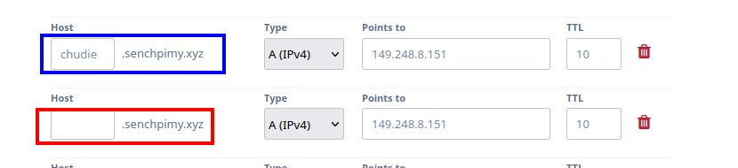

Cuando tienes un servidor pero muchas ideas que hacer con el, tener un solo dominio no basta para todo, para esto sirven los subdominios y la forma de hacerlos es muy sencillo, para esto hay que tener ya un servidor, un dominio y
nginx.
Para esto necesitamos un servicio que se ejecute en algun puerto que este libre,
aqui hice una simple programa en go que se ejeuta en el puerto
3001, por lo que si se ejecutara de forma local con escribir en el navegador
localhost:3001 podriamos ver esta pagina, este programa es bastante simple, genera una pagina web la cual tiene un espacio para poder entrar texto, cualquier texto que entre sera guardado en un archivo y los contenidos de este archivo sera mostrado en la misma pagina web al comienzo.
Ahora como podemos hacer que en nuestro dominio
example.com el cual ya esta ocupado pueda mostrar algo diferente en
ejemplo.example.com, esto se logra con
nginx.
Primero necesitamos actualizar los registros de
DNS de nuestro dominio, por lo que si ya tenemos el dominio
example.com apuntando a nuestro servidor, en la misma pagina que hicimos esto podremos agregar el subdominio
ejemplo, yo lo compre desde la pagina de
epik y no se si asi funcione en otras pero en esta solo es agregar el nombre de el subdominio y apuntar el servidor, que en este segundo paso no hay que hacer nada diferente a como es el dominio normal, es decir apuntamos el subdomino al mismo servidor sin especificar el puerto, pues es en realidad
nginx el que se encargara de redirigir las peticiones al puerto especificado. Al final nuestro dominio con subdominio quedaria asi:

En la foto podemos ver el dominio principal apuntando a un servidor y el subdomnio apunta a el mismo servidor / direccion IP, asi que en la parte de los registros de DNS ya es todo.
Asi que ahora con nuestro servicio ejecutando en el puerto 3001 y un subdominio apuntando a el servidor, ya podemos configurar
nginx.
Pra hacer esto nos dirijiremos a la carpeta
/etc/nginx/sites-avaible y crearemos un archivo con cualquier nombre, y dentro de ese archivo pondermos lo siguiente:
server {
listen 80 ;
listen [::]:80 ;
server_name ejemplo.example.com ;
root /path/to/html/files ;
index files.html ;
location /{
proxy_pass http://127.0.0.1:3001;
}
}
En este archivo estamos especificando que el nombre de el servidor sea el del subdominio que tenemos, y que este va a escuchar en el puerto 80, pero en realidad se refiere a que la comunicacion va a ser
http, los valores
root e
index, no son importantes en este caso, pues en una pagina estatica estos son los archivo sque se serviran en el servidor, pero como lo estamos sobreescribiendo en la parte de
location, estos no tienen ningun efecto y finalmente la parte de
location vamos a escribir
proxy_pass y luego la direccion local de nuestra maquina, que en todos los casos sera
127.0.0.1, acompañado con el protocolo que en este caso es http y finalmente ahora si apuntando hacia el puerto en el que esta nuestro servicio, siendo este el
3001 ponemos el
: y luego el puerto que en este caso seria el 3001.
Anque si ahora intentas acceder desde cualquier navegador te saldra una advertencia diciendo que la pagina no es segura, y para que pase esto hay que tener una coneccion de tipo
https que para obtener hay que conseguir un certificado SSL para poder tener una coneccion de tipo
https, en lugar de la
http, para poder hacer esto simplemente hay que tener instalado
python3-certbot-nginx que en un servido tipo debian seria
apt install python3-certbot-nginx y luego ejecutar
certbot --nginx, despues solo hay que seguir las instrucciones.
Y recordar que si por algun motivo no la pagina que intentas visitar se queda cargando por mucho tiempo, y finalmente cuando carga recives un error hay que verificar que este puerto no este bloqueado por el firewall, usando
ufw para permitir el acceso por este puerto hay que ejecutar el siguiente comando
ufw allow 3001